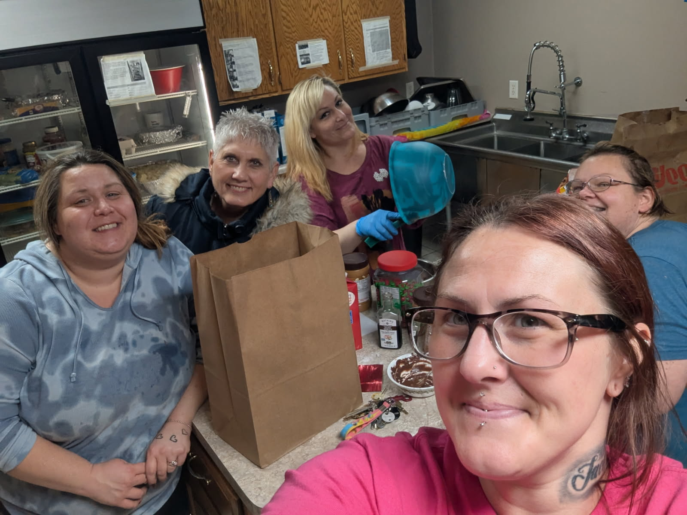
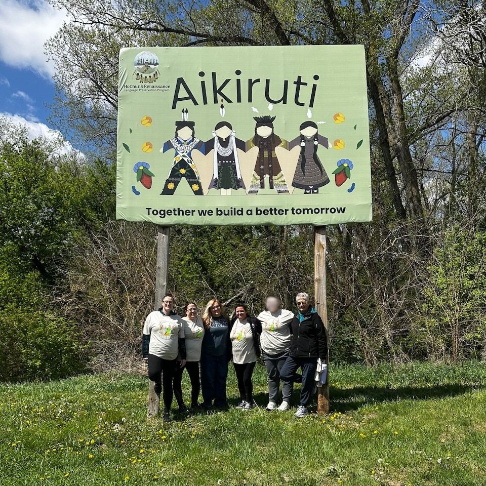

01
Our mission
As Christ's ambassadors, we exist to support survivors as they create new meaning for a wonderful life going forward.
04 Who we are
Whispers began with one person listening closely, meeting women wherever help was needed, and believing that hope grows through steady relationships. That same promise still guides us today.


Where it began
After more than 25 years as a registered nurse, Rev. Deb Rensink followed a call into vocational ministry. She completed her theological formation at Western Theological Seminary, was ordained in 2014, and served Northwest Iowa churches in outreach and congregational care.
That path eventually led her to women and children surviving domestic abuse. Beginning in 2017, support happened in coffee shops, city parks, courthouses, and wherever a safe conversation could begin.
There was no office or building, only a commitment to be present.
The story so far
Whispers has grown in reach, space, and partnership, but the work remains personal: listen first, walk beside each family, and stay for what comes next.
2014
Deb Rensink completes theological formation and begins serving in ministry across Northwest Iowa.
2017
Support starts without a physical office, meeting women wherever a safe conversation can happen.
2018
Whispers of Love, Hope & Joy becomes a nonprofit organization in June.
2023
On April 18, Whispers purchases the property that becomes the Talitha Koum Healing Campus.
2024
In September, women and children begin making a home within the restorative campus community.
2026
Whispers and Genesis House merge, creating a stronger continuum of support for Northwest Iowa families.
What guides us
Whispers is openly Christian, and support remains available to women from every background. Faith shapes how we serve, never whether someone is worthy of care.
01
As Christ's ambassadors, we exist to support survivors as they create new meaning for a wonderful life going forward.
02
We aspire to restore human dignity to survivors of intimate partner violence by offering hope, compassion, and healing so that life-sustaining skills are rebuilt.
03
We listen before deciding, shape support around the person, and honor each woman's voice, strengths, pace, and hopes for the future.